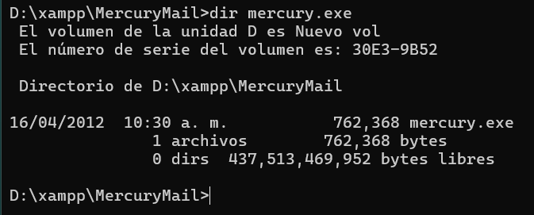
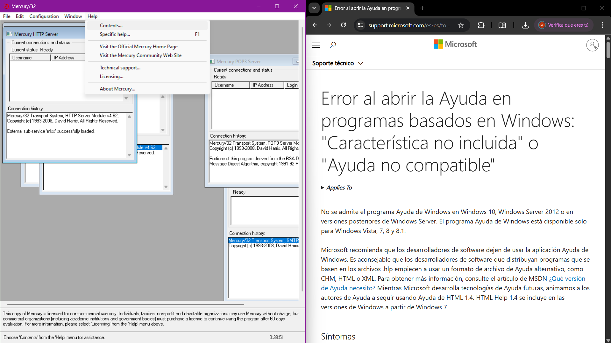
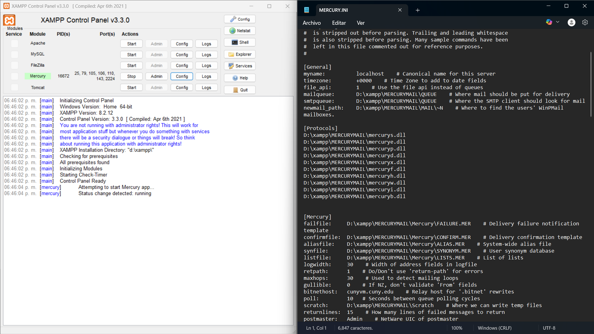
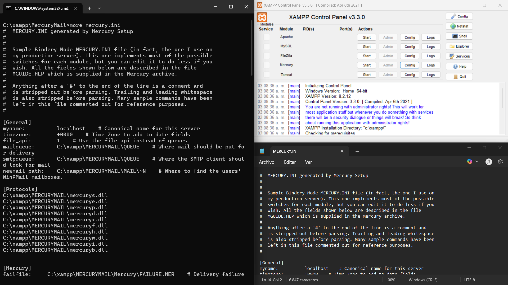
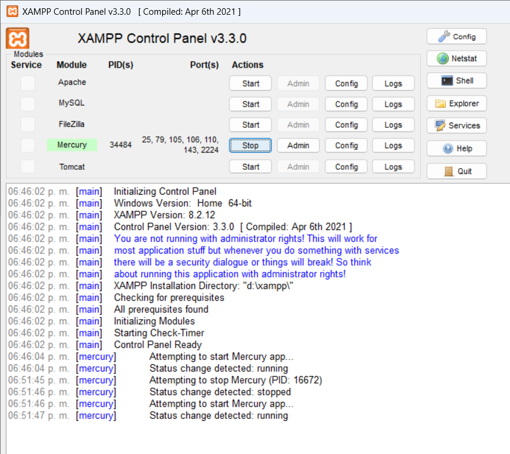
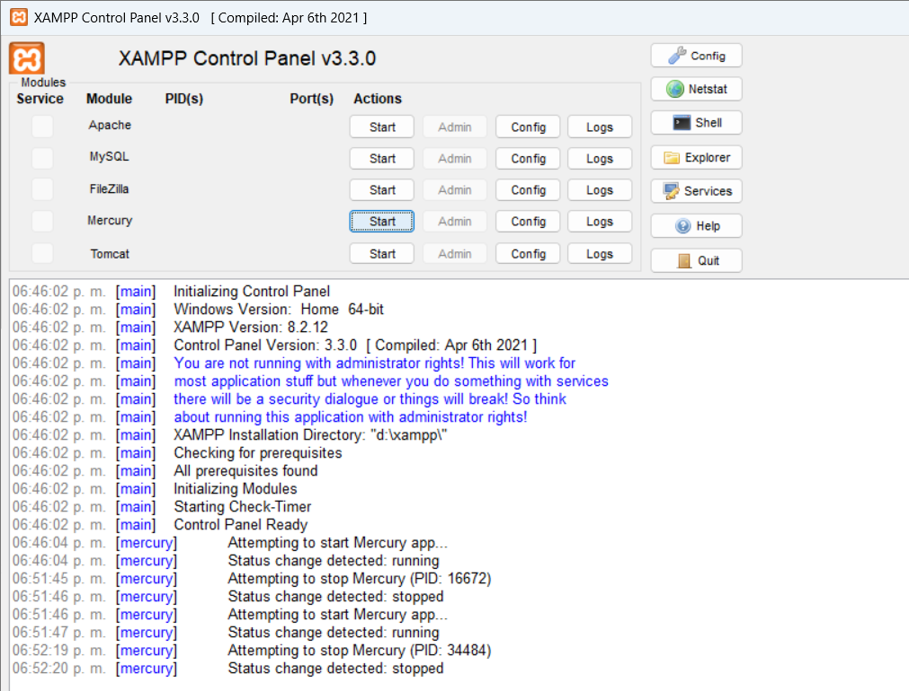
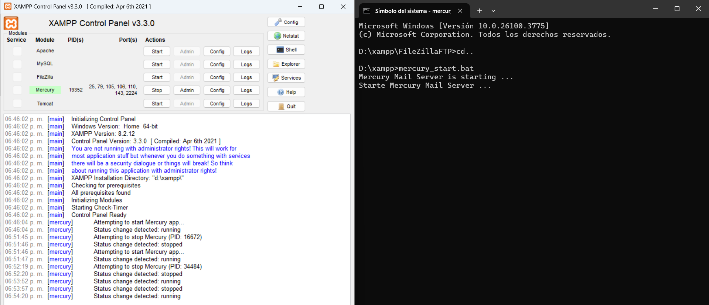
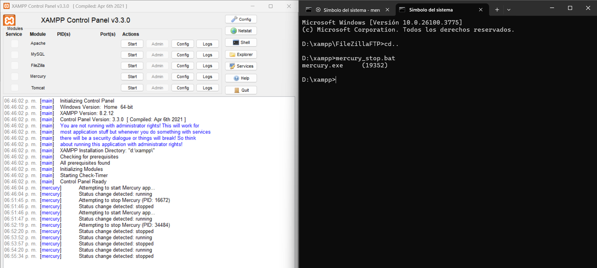

Mercury es un servidor de correo electrónico diseñado para sistemas Windows. Desarrollado por David Harris, permite enviar y recibir correos mediante protocolos como SMTP, POP3 y IMAP. Es usado comúnmente en redes pequeñas o medianas, y se integra fácilmente con clientes como Pegasus Mail para ofrecer una solución completa de correo.
-
Localización del servidor.
 -
Ayuda del servidor.
 -
Muestre el archivo de configuración de forma gráfica.
 -
Muestre el archivo de configuración en PowerShell usando el comando:
more mercury.ini -
Inicie el servidor mediante XAMPP.
 -
Detenga el servidor mediante XAMPP.
 -
Inicie el servidor mediante CMD y compruebe en la interfaz de XAMPP.
 -
Detenga el servidor mediante comando CMD y compruebe en la interfaz de XAMPP.
Nota: Es importante cerrar el servidor en otra terminal para que no cierre en rojo y evitar que falle XAMPP.
